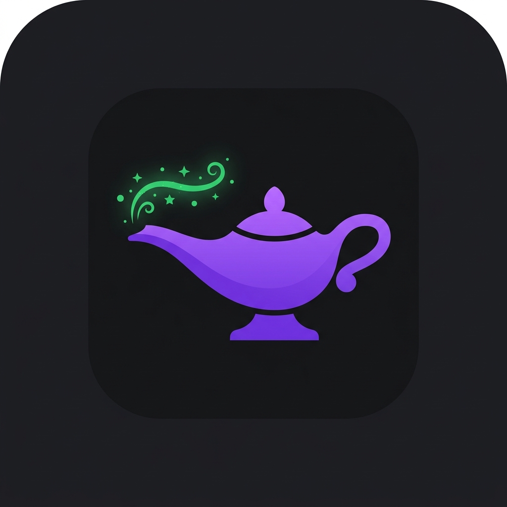

WhatsGenieWelcome to WhatsGenie
Your extension is ready. Follow these steps to select a WhatsApp chat, extract the conversation, and keep the latest messages synced in the side panel.
-
1
Open WhatsApp Web
Sign in at WhatsApp Web and keep the chat list visible in the left sidebar.
-
2
Open the WhatsGenie side panel
Click the extension icon, then use the
+button to show chat selector markers. -
3
Select and extract a chat
Choose the chat you want, let WhatsApp open it automatically, then press
Extract. -
4
Sync new messages anytime
Use the sync button in the top header to refresh the current conversation with the latest loaded messages.
Tip: If you do not see selector buttons inside WhatsApp, refresh web.whatsapp.com once and open the side panel again.